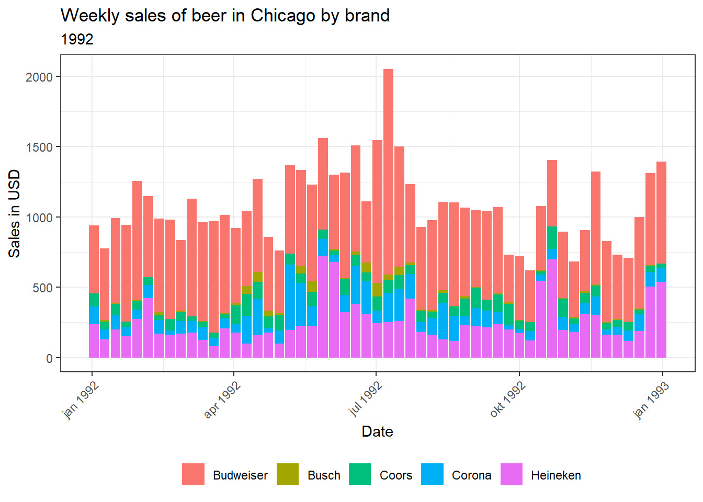
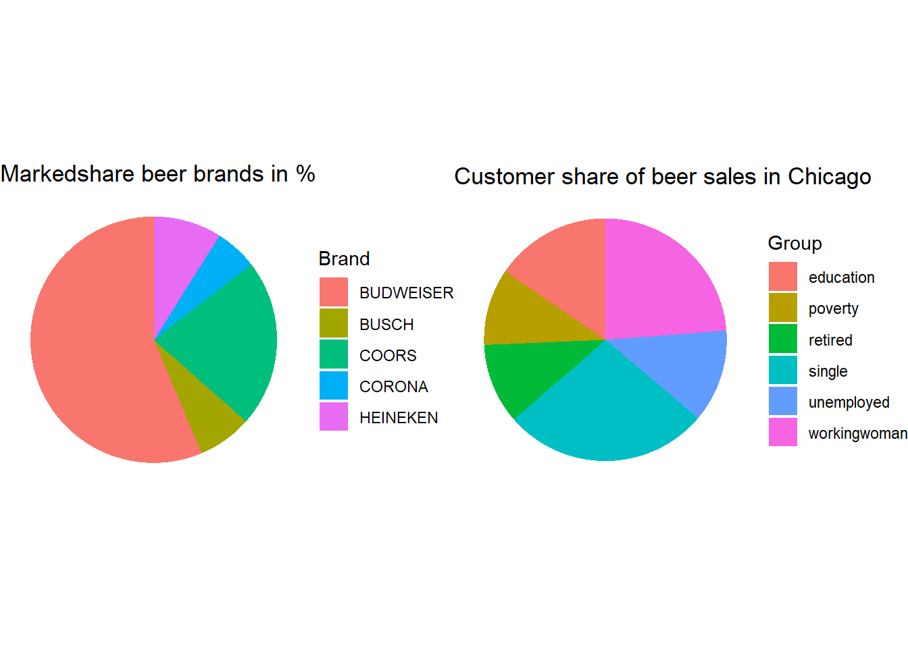
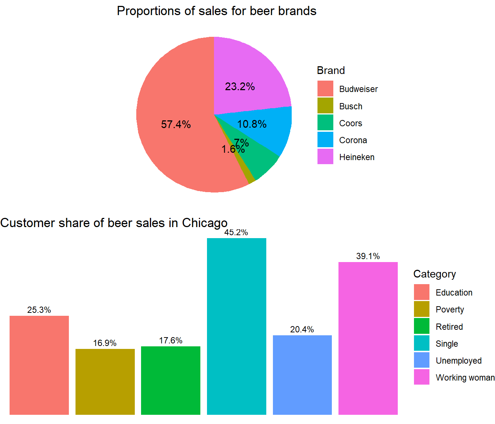
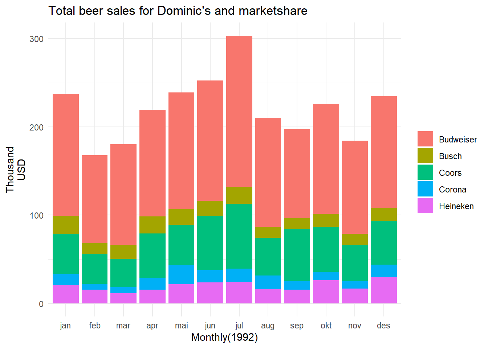

PO_1005
oppgave 2


Salgsresultater: Oversikt over totalt salgsvolum, inntekt og enheter solgt.
Salgstrender: Analyse av salgstrender over tid og sesongmessige mønstre.
Produktytelse: Vurdering av mest solgte produkter, produkter med høy margin.
Markedsandel: Evaluering av markedsandelen i forhold til konkurrenter og bransjen.
Anbefalinger: Tiltak eller strategier for å forbedre salgsresultatene.
Oppgave 3
Samlet salgsytelse: Oversikt over konsernets totale salgsytelse per måned.
Markedsandel: Evaluering av konsernets markedsandel i forhold til konkurrenter og bransjen.
Produktkategorier: Gjennomgang av salgsytelse for ulike produktkategorier eller segmenter.
Salgstrender: Analyse av salgstrender over tid og sesongmessige mønstre.
Konkurrentanalyse: Evaluering av konkurrentenes ytelse og markedsposisjon.
Økonomiske resultater: Oversikt over økonomiske resultater og relevante indikatorer.
Anbefalinger og handlingsplaner: Forslag til tiltak for å forbedre konsernets salgsresultater.


Oppgave 4
Kan dataene benyttes til å planlegge nye utsalg? Dersom konsernledelsen ønsker å etablere et nytt utsalg, hvordan kan de benytte dataene til å finne den beste lokasjonen?
Butikkdata kan brukes til å kvantifisere den geografiske påvirkningen av hver butikk på markedet. En effektiv tilnærming er å tildele hver butikk en egen sirkel som er plassert geografisk korrekt og representerer butikkens årlige inntekt. Sirkelen antyder hvor mye av området rundt butikken som genererer inntekt. Ved å opprette et slikt kart kan vi identifisere områder der butikkjeden ikke genererer inntekter og anta at det kan være et potensielt inntektsgrunnlag i disse områdene.